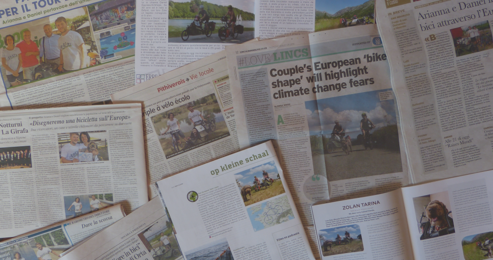

<section id="press">
  <div class="container">
    <div class="row border">
      <div class="col-md-12">

        <div id="press-slider" class="block slider">
          
          <div class="centered">
            <h1 class="text-uppercase">{{ page.title}}</h1>
            <br>
            {% if page.subtitle %}
            <h4>{{ page.subtitle }}</h4>
            {% endif %}
          </div>
        </div>
        <!--This code below is valid only for very small screens-->
        <div class="slider-below block">
          <h1 class="text-uppercase center-block" style="color:#E4B363;">{{ page.title}}</h1>
          <br>
          {% if page.subtitle %}
          <h4 class="center-block" style="color:#E4B363;">{{ page.subtitle }}</h4>
          {% endif %}
        </div>

        <div id="press-text" class="block">
          <p class="center-block">We are very proud that our project has been featured in a huge number of news outlets, both in the regular press and online channels across Europe and beyond. We have done numerous interviews for radio programs and podcasts, and we even got interviewed live on BBC World News.</p>
          <!--Below is a record of all the news outlets - both regular press as well as online newspapers/blogs - in which our project has been featured thus far, listed by country of publication.--> 

          <p class="center-block">Below is a list of publications that featured our journey; they are listed with a few of our favorites at the top, then by country after that. This is just a selection. </p> 

          <ul class="countries">
          <li class="country">OUR FAVOURITES</li>
          <ul class="newspapers"> 
            <li class="newspaper"><b>La Gazzetta dello Sport</b> - 22/08/2022: <a class="green" target="_blank"  href="https://www.gazzetta.it/motori/mobilita-sostenibile/22-08-2022/bici-disegnata-con-gps-in-europa-da-arianna-e-daniel.shtml">"Disegnano una bici sull'Europa lunga oltre 7 mila km"</a></li>
            <li class="newspaper"><b>The Guardian</b> - 18/08/2019: <a class="green" target="_blank"  href="https://www.theguardian.com/lifeandstyle/2022/aug/18/couple-draw-giant-4500-mile-gps-bicycle-across-europe">"Couple draw giant 4,500-mile GPS bicycle across Europe"</a></li>
            <li class="newspaper"><b>The Guardian</b> - 18/08/2019: <a class="green" target="_blank"  href="https://www.theguardian.com/environment/bike-blog/2022/aug/18/why-we-drew-600-mile-long-picture-of-a-bicycle-across-europe-gps-image-climate-crisis">"Why we drew 600-mile long picture of a bicycle across Europe"</a></li>
            <li class="newspaper"><b>Eco Risveglio</b> - 10/07/2019: <a class="green" target="_blank"  href="pdf/ecorisveglio-10-07-2019.pdf">"Disegneremo una bicicletta sull'Europa"</a></li>
            <li class="newspaper"><b>Lagotto</b> - 10/2019: <a class="green" target="_blank"  href="pdf/lagotto-10-2019.pdf">"Zolan tarina"</a></li>
           </ul>

          <li class="country">ITALY</li>
          <ul class="newspapers"> 
            <li class="newspaper"><b>La Gazzetta dello Sport</b> - 22/08/2022: <a class="green" target="_blank"  href="https://www.gazzetta.it/motori/mobilita-sostenibile/22-08-2022/bici-disegnata-con-gps-in-europa-da-arianna-e-daniel.shtml">"Disegnano una bici sull'Europa lunga oltre 7 mila km"</a></li>
            <li class="newspaper"><b>La Stampa</b> - 28/08/2022: <a class="green" target="_blank"  href="https://www.lastampa.it/novara/2022/08/28/news/il_nostro_giro_deuropa_su_un_tracciatoa_forma_di_bici-7584638/#google_vignette">"Il nostro giro d’Europa su un tracciato a forma di bici"</a></li>
            <li class="newspaper"><b>Il Fatto Quotidiano</b> - 18/08/2022: <a class="green" target="_blank"  href="https://www.ilfattoquotidiano.it/2022/08/18/tracciano-il-record-mondiale-di-disegno-gps-in-bici-e-pedalano-per-lambiente-diventi-piu-vulnerabile-quando-non-stai-chiuso-in-auto/6766471/">"Tracciano il record mondiale di disegno Gps in bici e pedalano per l’ambiente: Diventi più vulnerabile quando non stai chiuso in auto"</a></li>
            <li class="newspaper"><b>Wired</b> - 05/11/2022: <a class="green" target="_blank"  href="https://www.wired.it/article/arte-gps-progetto-bicycles-will-save-the-world/">"L'arte Gps che aiuta la mobilità sostenibile"</a></li>
            <li class="newspaper"><b>Bicitalia</b> - 25/08/2022: <a class="green" target="_blank"  href="https://www.bicitalia.org/it/news-ed-eventi/258-7237-km-per-disegnare-la-forma-di-un-enorme-bicicletta-attraverso-l-europa-centrale">"7237 km per disegnare la forma di un'enorme bicicletta attraverso l’ Europa centrale"</a></li>
            <li class="newspaper"><b>Bici da Strada</b> - 19/08/2022: <a class="green" target="_blank"  href="https://www.bicidastrada.it/la-bici-piu-grande-del-mondo-su-strava-tutto-e-partito-dallitalia/">"La bici più grande del mondo su Strava. Tutto è partito dall’Italia…"</a></li>
            <li class="newspaper"><b>Eco Risveglio</b> - 10/07/2019: <a class="green" target="_blank"  href="pdf/ecorisveglio-10-07-2019.pdf">"Disegneremo una bicicletta sull'Europa"</a></li>
            <li class="newspaper"><b>La Stampa</b> - 11/07/2019: <a class="green" target="_blank"  href="https://www.lastampa.it/novara/2019/07/11/news/un-mondo-migliore-in-bici-la-pedalata-dei-prof-di-orta-per-sensibilizzare-l-europa-1.36946354">"Un mondo migliore in bici: la pedalata dei prof di Orta per sensibilizzare l’Europa"</a></li>
            <li class="newspaper"><b>Cusio 24</b> - 12/07/2019: <a class="green" target="_blank"  href="https://www.cusio24.it/index.php/6187-da-orta-oltre-5-000km-in-bici-attraverso-l-europa-per-sensibilizzare-sui-problemi-ambientali">"Da Orta, oltre 5.000km in bici attraverso l'Europa per sensibilizzare sui problemi ambientali"</a></li>
            <li class="newspaper"><b>Informatore</b> - 13/07/2019: "Arianna e Daniel in bici attraverso l'Europa" (paper only)</li>
            <li class="newspaper"><b>Borgomanero 24</b> - 14/07/2019: <a class="green" target="_blank"  href="https://www.borgomanero24.it/index.php/4798-orta-arianna-e-daniel-partiti-in-bici-per-il-viaggio-di-sensibilizzazione-attraverso-l-europa-foto-e-video?tmpl=component&type=raw">"Orta, Arianna e Daniel partiti in bici per il viaggio di sensibilizzazione attraverso l'Europa"</a></li> 
            <li class="newspaper"><b>Famiglia Nuaresa</b> - 15/07/2019: <a class="green" target="_blank"  href="https://www.famiglianuaresa.com/ambiente/una-bicicletta-diventa-uno-strumento-per-salvare-la-terra">"Una bicicletta diventa uno strumento per salvare la terra"</a></li>
            <li class="newspaper"><b>La Voce di Novara</b> - 16/07/2019: <a class="green" target="_blank"  href="https://www.lavocedinovara.com/ambiente/econotizie/seimila-chilometri-in-bici-destinazione-mobilita-sostenibile/">"Seimila chilometri in bici, destinazione mobilità sostenibile"</a></li>
            <li class="newspaper"><b>Eco Risveglio</b> - 17/07/2019: "Partiti da Orta per il tour di 6000 km" (paper only)</li>
            <li class="newspaper"><b>Eco Risveglio</b> - 31/07/2019: "Arianna, Daniel e la cagnolina Zola con il progetto di salvare il mondo" (paper only)</li>
            <li class="newspaper"><b>Idea</b> - 01/09/2019: "Bicycles Will Save the World: da Orta san Giulio alla volta dell'Europa" (paper only)</li>
            <li class="newspaper"><b>Greenreport.it</b> - 06/09/2019: <a class="green" target="_blank"  href="http://www.greenreport.it/news/mobilita/una-coppia-e-un-cane-disegnano-pedalando-una-gigantesca-bicicletta-sulle-strade-europee/">"Una coppia e un cane disegnano pedalando una gigantesca bicicletta sulle strade europee"</a></li>
            <li class="newspaper"><b>Inbici.net</b> - 06/09/2019: <a class="green" target="_blank"  href="https://www.inbici.net/rivista-ciclismo/6000-km-per-disegnare-una-bici-sulleuropa-la-lunga-pedalata-di-arianna-e-daniel/">"6000 km per disegnare una bici sull'Europa: la lunga pedalata di Arianna e Daniel"</a></li>
            <li class="newspaper"><b>Cusio 24</b> - 22/09/2019: <a class="green" target="_blank"  href="http://www.cusio24.it/index.php/6438-tappa-parigina-per-i-protagonisti-di-bicycles-will-save-the-world-video">"Tappa parigina per i protagonisti di Bicycles Will Save the World</a></li>
            <li class="newspaper"><b>Cusio 24</b> - 02/10/2019: <a class="green" target="_blank"  href="https://www.cusio24.it/index.php/6483-pausa-forzata-per-arianna-e-daniel-di-bicycles-will-save-the-world">"Pausa forzata per Arianna e Daniel di Bicycles Will Save the World"</a></li>
            <li class="newspaper"><b>Il Fatto Quotidiano</b> - 14/10/2019: <a class="green" target="_blank" href="https://www.ilfattoquotidiano.it/2019/10/14/bicycles-will-save-the-world-una-coppia-di-ricercatori-con-la-loro-cagnolina-lascia-il-lavoro-per-disegnare-pedalando-una-bici-sulleuropa/5494039/">"Bicycles Will Save the World, una coppia di ricercatori (con la loro cagnolina) lascia il lavoro per disegnare pedalando una bici sull’Europa"</a></li>
          </ul>         
          <li class="country">UK</li>
            <ul class="newspapers"> 
              <li class="newspaper"><b>The Guardian</b> - 18/08/2019: <a class="green" target="_blank"  href="https://www.theguardian.com/lifeandstyle/2022/aug/18/couple-draw-giant-4500-mile-gps-bicycle-across-europe">"Couple draw giant 4,500-mile GPS bicycle across Europe"</a></li>
              <li class="newspaper"><b>The Guardian</b> - 18/08/2019: <a class="green" target="_blank"  href="https://www.theguardian.com/environment/bike-blog/2022/aug/18/why-we-drew-600-mile-long-picture-of-a-bicycle-across-europe-gps-image-climate-crisis">"Why we drew 600-mile long picture of a bicycle across Europe"</a></li>
              <li class="newspaper"><b>The Independent</b> - 19/08/2019: <a class="green" target="_blank"  href="https://www.independent.co.uk/news/world/europe/gps-giant-bicycle-sustainable-travel-b2148664.html">"Cyclists pedal 4,500 miles across Europe to draw giant GPS bicycle"</a></li>
              <li class="newspaper"><b>Lincolnshire Echo</b> - 25/08/2019: <a class="green" target="_blank"  href="https://www.lincolnshirelive.co.uk/news/local-news/couple-biking-around-europe-shape-3226220">"Couple biking around Europe in the shape of a bicycle to save the world"</a></li>
            <li class="newspaper"><b>Road.cc</b> - 26/08/2019: <a class="green" target="_blank"  href="https://road.cc/content/news/265876-ultimate-eurobike-couple-and-dog-ride-6000km-round-europe-trace-huge-bike-and">"The ultimate Eurobike? Couple (and dog) ride 6,000km round Europe to trace huge bike and fight climate change"</a></li>
            <li class="newspaper"><b>Cyclist.co.uk</b> - 02/09/2019: <a class="green" target="_blank"  href="https://www.cyclist.co.uk/news/6959/lincolnshire-couple-riding-around-europe-in-bid-to-promote-sustainable-cycling">"Lincolnshire couple riding around Europe in bid to promote sustainable cycling"</a></li>
          </ul>
          <li class="country">USA</li>
          <ul class="newspapers"> 
            <li class="newspaper"><b>Outside Magazine</b> - 18/08/2022: <a class="green" target="_blank"  href="https://velo.outsideonline.com/road/road-culture/the-worlds-largest-strava-art-is-finally-finished/">"The world’s largest Strava art is finally finished"</a></li>
          </ul>
        
        <li class="country">FRANCE</li>
          <ul class="newspapers"> 
          <li class="newspaper"><b>Le Figaro</b> - 23/08/2022: <a class="green" target="_blank"  href="https://www.lefigaro.fr/voyages/ils-pedalent-des-kilometres-pour-dessiner-un-velo-geant-et-appeler-a-moins-prendre-sa-voiture-20220823">"Ils pédalent des kilomètres pour dessiner un vélo géant (et appeler à moins prendre sa voiture)"</a></li>
          </ul>
          <ul class="newspapers"> 
          <li class="newspaper"><b>Le Parisien</b> - 19/08/2022: <a class="green" target="_blank"  href="https://www.leparisien.fr/societe/ils-pedalent-7300-kilometres-en-europe-pour-dessiner-un-velo-geant-par-gps-19-08-2022-RKEY22DBJ5CLVNFG24IFSMIMOI.php">"Ils pédalent 7300 kilomètres en Europe pour dessiner un vélo géant par GPS"</a></li>
          </ul>
          
          <ul class="newspapers"> 
          <li class="newspaper"><b>Huffington Post</b> - 19/08/2022: <a class="green" target="_blank"  href="https://www.huffingtonpost.fr/sport/article/pour-alerter-sur-le-climat-ce-couple-pedale-pendant-7-300-km-et-dessine-un-velo-geant_206759.html">"Pour alerter sur le climat, ce couple pédale pendant 7 300 km et dessine un vélo géant"</a></li>
          </ul>
          <ul class="newspapers"> 
          <li class="newspaper"><b>20 minutes</b> - 26/08/2022: <a class="green" target="_blank"  href="https://www.20minutes.fr/planete/3341835-20220826-changement-climatique-couple-fait-7200-km-velo-travers-europe-dessine-bicyclette-gps">"Changement climatique : Un couple fait 7.200 km à vélo à travers l’Europe et dessine une bicyclette sur GPS"</a></li>
          </ul>
        <ul class="newspapers"> 
            <li class="newspaper"><b>La République du centre</b> - 10/2019: <a class="green" target="_blank"  href="https://www.larep.fr/saint-loup-des-vignes-45340/actualites/plus-de-5-000-km-a-velo-a-travers-l-europe-pour-delivrer-un-message-ecolo_13621093/">"Plus de 5.000 km à vélo à travers l'Europe pour délivrer un message écolo"</a></li>
          </ul>
        <li class="country">SPAIN</li>
          <ul class="newspapers"> 
            <li class="newspaper"><b>La Vanguardia</b> - 25/08/2022: <a class="green" target="_blank"  href="https://www.lavanguardia.com/motor/vehiculos/bicicletas/20220825/8484530/dos-ciclistas-dibujan-bicicleta-rutas-gps-europa.html">"Dos ciclistas recorren 7.000 km y dibujan una bicicleta enorme con el "track" de su ruta"</a></li>
            <li class="newspaper"><b>Iberobike.com</b> - 29/08/2019: <a class="green" target="_blank"  href="https://www.iberobike.com/dos-cicloturistas-y-un-perro-recorren-6000-km-para-dibujar-la-bicicleta-mas-grande-del-mundo-y-enviar-este-mensaje/">"Dos cicloturistas y un perro recorren 6000 km para dibujar la bicicleta más grande del mundo y enviar este mensaje"</a></li>
          </ul>
          <li class="country">PORTUGAL</li>
          <ul class="newspapers"> 
            <li class="newspaper"><b>Publico</b> - 25/08/2019: <a class="green" target="_blank"  href="https://www.publico.pt/2022/08/25/p3/noticia/casal-desenhou-maior-bicicleta-mundo-mapa-pedalar-europa-clima-2017954">"Um casal desenhou a maior bicicleta do mundo num mapa — ao pedalar na Europa pelo clima"</a></li>
          </ul>
          <li class="country">BELGIUM</li>
          <ul class="newspapers"> 
            <li class="newspaper"><b>European Cyclists Federation</b> - 29/08/2019: <a class="green" target="_blank"  href="https://ecf.com/news-and-events/news/two-people-two-bikes-and-dog-break-world-records-name-sustainable-mobility">"Two people, two bikes and a dog break world records in the name of sustainable mobility"</a></li>
          </ul>
          <li class="country">NEW ZEALAND</li>
          <ul class="newspapers"> 
            <li class="newspaper"><b>NZ Herald</b> - 01/09/2022: <a class="green" target="_blank"  href="https://www.nzherald.co.nz/travel/couple-draw-giant-7237km-gps-bike-across-europe-for-climate-change/6PRZ6MBSMRTLANLQCUJ23O3JSQ/">"Couple 'draw' giant 7237km GPS bike across Europe for climate change"</a></li>
          </ul>
          <li class="country">GERMANY</li>
          <ul class="newspapers"> 
            <li class="newspaper"><b>Sueddeutsche Zeitung</b> - 21/08/2022: <a class="green" target="_blank"  href="https://www.sueddeutsche.de/panorama/fahrrad-europa-radtour-umweltschutz-1.5641966">"Malen nach Zahlen"</a></li>
          </ul>
          <ul class="newspapers"> 
            <li class="newspaper"><b>Stern</b> - 22/08/2022: <a class="green" target="_blank"  href="https://www.stern.de/reise/fahrrad-auf-europakarte--paar-malt-mit-gps-tracking-und-knackt-rekorde-32654058.html">"Fahrrad auf Europakarte: Paar malt mit GPS-Tracking und knackt Rekorde"</a></li>
          </ul>
          <ul class="newspapers"> 
            <li class="newspaper"><b>eBikeNews.de</b> - 29/08/2022: <a class="green" target="_blank"  href="https://ebike-news.de/so-kommen-drei-weltrekorde-mit-dem-fahrrad-zustande/206467/">"Drei auf einen Streich: Mit den Fahrrädern zum Weltrekord"</a></li>
          </ul>        
          <li class="country">LUXEMBOURG</li>
          <ul class="newspapers"> 
            <li class="newspaper"><b>RTL Today</b> - 21/08/2022: <a class="green" target="_blank"  href="https://today.rtl.lu/life/travel/a/1956259.html">"Couple bike 7,000 km to draw giant GPS bicycle"</a></li>
          </ul>
          <ul class="newspapers"> 
            <li class="newspaper"><b>L'essentiel</b> - 22/08/2022: <a class="green" target="_blank"  href="https://www.lessentiel.lu/de/story/paar-zeichnet-riesiges-fahrrad-ueber-luxemburg-167521869790">"Paar «zeichnet» riesiges Fahrrad über Europa"</a></li>
          </ul>
          <li class="country">SWITZERLAND</li>
          <ul class="newspapers"> 
            <li class="newspaper"><b>20 minuten</b> - 22/08/2022: <a class="green" target="_blank"  href="https://www.20min.ch/story/paar-zeichnet-mit-monatelanger-reise-ein-gps-velo-auf-die-landkarte-264622412840">"Paar zeichnet mit monatelanger Reise ein GPS-Velo auf die Landkarte"</a></li>
          </ul>
          <ul class="newspapers"> 
            <li class="newspaper"><b>Berner Zeitung</b> - 21/08/2022: <a class="green" target="_blank"  href="https://www.bernerzeitung.ch/mit-den-pedalen-gemalt-812651074003">"Mit den Pedalen gemalt"</a></li>
          </ul>
          <li class="country">DENMARK</li>
          <ul class="newspapers"> 
            <li class="newspaper"><b>trendsandtravel.dk</b> - 23/08/22: <a class="green" target="_blank"  href="https://www.trendsandtravel.dk/det-er-noget-af-en-cykeltur/">"Noget af en cykeltur"</a></li>
          </ul>
          <li class="country">SOLVENIA</li>
          <ul class="newspapers"> 
            <li class="newspaper"><b>Dostop.si</b> - 02/09/23: <a class="green" target="_blank"  href="https://www.dostop.si/kolesarska-umetnost-ali-strava-art-najvecja-gps-risba-je-kolo/">"Kolesarska umetnost ali Strava art: najvecja GPS risba je kolo"</a></li>
          </ul>
        <li class="country">THE NETHERLANDS</li>
          <ul class="newspapers"> 
            <li class="newspaper"><b>In De Kopgroep</b> - 19/08/2022: <a class="green" target="_blank"  href="https://indekopgroep.nl/gps-art-record/">"De grootste GPS-art ooit is na 131 dagen af"</a></li>
          </ul>
          <ul class="newspapers"> 
            <li class="newspaper"><b>De Wereldfietser</b> - 10/2019: <a class="green" target="_blank"  href="pdf/dewereldfietser-10-2019.pdf">"Pan-Europese fiets-route"</a></li>
          </ul>
        <li class="country">FINLAND</li>
          <ul class="newspapers"> 
            <li class="newspaper"><b>Lagotto</b> - 10/2019: <a class="green" target="_blank"  href="pdf/lagotto-10-2019.pdf">"Zolan tarina"</a></li>
          </ul>
      </ul>
    </div>

      </div> 
    </div>
  </div>
</section>
